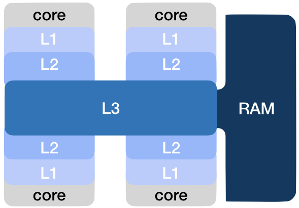
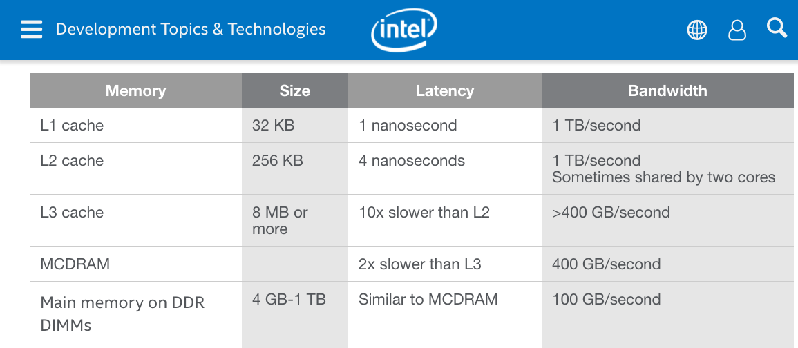

rappels¶
pour remettre tout ça en perspective, voyons un peu le temps d’accès moyen aux différentes parties de l’ordi
le coeur de l’ordi¶
au coeur de l’ordi se trouve le CPU; typiquement actuellement la fréquence d’horloge est de l’ordre de 1 GHz, donc une opération - on dit un cycle - dure de l’ordre de 1 ns
mais bon c’est bien beau de faire une multiplication en 1ns, mais (un processeur possède en propre très peu de mémoire) il faut aussi que les données (les opérandes) soient là
pour aller chercher les données et les apporter au CPU pour qu’il puisse en faire quelque chose, on peut avoir en tête les ordres de grandeur suivants
Mémoire |
Temps d’accès |
Capacité |
Prix |
|---|---|---|---|
Registre |
1 ns |
< 1 ko (kilo-octet) |
super chers |
Cache |
~2 ns |
4 Mo (Méga-octet) |
très cher |
RAM |
~10 ns |
4-16 Go (Giga-octet) |
cher |
données persistentes¶
et si on veut que le stockage soit persistent, on doit utiliser des technologies différentes :
Autres |
Temps d’accès |
Capacité |
Prix |
|---|---|---|---|
SSD (Solid State) |
50 μs |
1 To |
peu cher |
HDD (Hard Disk) |
10 ms |
1 To (Tera-octet) |
peu cher |
Internet |
1s ou + |
infinie |
gratuit |
le terme ‘entrées-sorties’¶
toutes les opérations qui sortent du cercle fermé CPU-mémoire s’appellent de manière générique les entrées-sorties
en anglais input/output, encore abrégé sous le terme I/O
ça désigne donc toutes les opérations relativement lentes par rapport à la cadence du processeur
un peu de calcul mental¶
avec un disque dur (encore pas complètement dépassé), la tête de lecture glisse le long d’un rayon fixe du disque; du coup le temps d’accès moyen à une donnée est lié à la vitesse de rotation; disque rapide = 15 krpm, d’où un temps d’accès moyen de l’ordre de la milliseconde au mieux
c’est pourquoi aujourd’hui on privilégie la technologie SSD (pas de mécanique), mais les temps d’accès restent plusieurs ordres de magnitude plus lents
{kind=link}
vous avez sans doute l’habitude de mesurer votre ping (durée d’un aller-retour), mais bien sûr ça dépend aussi de la localisation du serveur - à la vitesse de la lumière il faut ~3 ms pour faire 1000 km;
et ce qui apparaît comme une opération élémentaire pour l’application (genre, ouvrir une connexion) met typiquement en jeu plusieurs aller-retours, avec à chaque fois des délais (traitement par l’OS); du coup les délais ici sont encore plus longs, ça peut aller depuis quelques millisecondes à plusieurs centaines de millisecondes avec des conditions réseau dégradées
digression : la notion de cache/buffer¶
un grand nombre de problèmes classique de bas niveau, adressés par l’OS, ont un rapport plus ou moins direct avec cette différence entre les ordres de grandeurs présentées ci-dessus
on va voir ça sur plusieurs exemples
la mémoire cache¶
la mémoire cache, c’est une mémoire plus rapide (donc plus chère) que la RAM, qui sert en quelque sorte à lisser la différence de cadence entre le CPU et la RAM
{kind=link}
lorsque vous regardez le descriptif d’un ordinateur, on vous met
combien il y a de CPUs et de coeurs (par ex. bi-proc dual-core 2.7 GHz) -> en tout 4 coeurs
combien il y a de RAM (par ex. 4Go)
combien il y a de disque, hdd ou ssd (par ex. 500 Go)
et parfois on vous dit la taille de la mémoire cache

les accès au disque dur¶
vous entendrez dire parfois que “les entrées-sorties sont bufferisées”; ca signifie simplement que lorsqu’on écrit ou qu’on lit sur le disque dur, on ne le fait jamais un octet à la fois, on fait des économie d’échelle en faisant l’opération pour un grand nombre d’octets à la fois;
pour cette raison lorsque vous écrivez sur le disque, les données transitent par une zone intermédiaire (toujours en mémoire), qu’on appelle un buffer, et c’est seulement lorsque cette zone est pleine qu’on écrit son contenu sur le disque (et pareil en lecture)
donc si vous avez 1 Mo à écrire (relativement petit) sur disque où le temps d’accès est de 10ms
si vous écrivez un octet à la fois, vous en avez pour $10^6 * 10^{-2}$ = $10^4$s ~ 2h46 !
si vous vous arrangez pour écrire en un coup 4k (dans le même secteur: la tête du disque au même endroit, le disque tourné de la même façon) alors vous faites la même chose dans les 4000 fois plus vite, c’est intéressant !
les écarts sont moins énormes avec un SSD, mais la logique est la même, et bien sûr les accès se font aussi sur un mode bufferisé
autres¶
c’est le même principe qui est adopté pour tout le reste des équipements de l’ordi, pour les accès réseau bien sûr, et aussi par exemple pour la carte graphique
si vous vous souvenez de l’exercice du snake, on avait utilisé pygame qui nous offrait une API du genre de
screen.fill(BACKGROUND_COLOR)rect = pg.Rect(x*W, y*H, W, H)pg.draw.rect(screen, SNAKE_COLOR, rect)…
tout ceci se fait en mémoire, et ce n’est que lorsqu’on appelle
pg.display.update()
que la mémoire se fait copier vers la carte graphique, qui est un dispositif séparé, et qui communique avec le coeur via un bus d’extension (le bus PCI-express en l’occurrence), certes assez rapide mais moins que le bus
temps d’accès + bande passante¶
donc pour résumer
les échanges d’info se font entre des mondes qui opèrent à des cadences différentes
du coup on a souvent recours à la technique qui consiste à grouper les échanges en demandant non pas un octet ou un mot, mais un gros paquet à la fois
du coup pour caractériser un médium on a besoin de 2 nombres qui sont
le temps d’accès (latency) - combien on doit attendre avant d’avoir le premier morceau de la réponse
la bande passante (bandwidth) - combien d’info on peut espérer avoir par seconde lorsqu’on fait une demande groupée
et de là on peut calculer un temps d’accès moyen par octet, si on fait une demande groupée de N octets
$avgtime = \frac{latency + \frac{N}{bandwidth}}{N} = \frac{1}{bandwidth} + \frac{latency}{N}$
qui peut se résumer comme ceci :
si on fait les accès un par un, c’est la latency qui compte
si on fait les accès en grand nombre au contraire, c’est la bandwidth qui compte